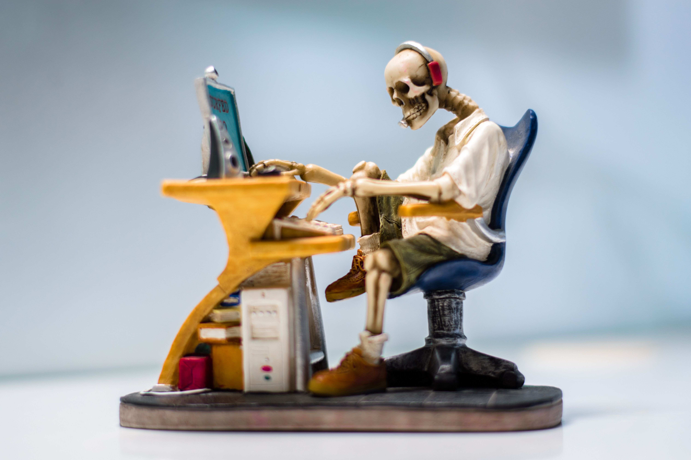
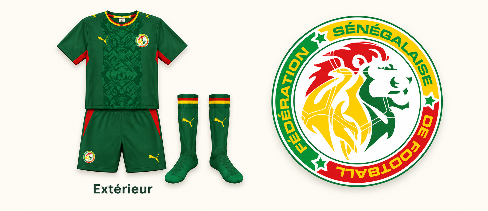
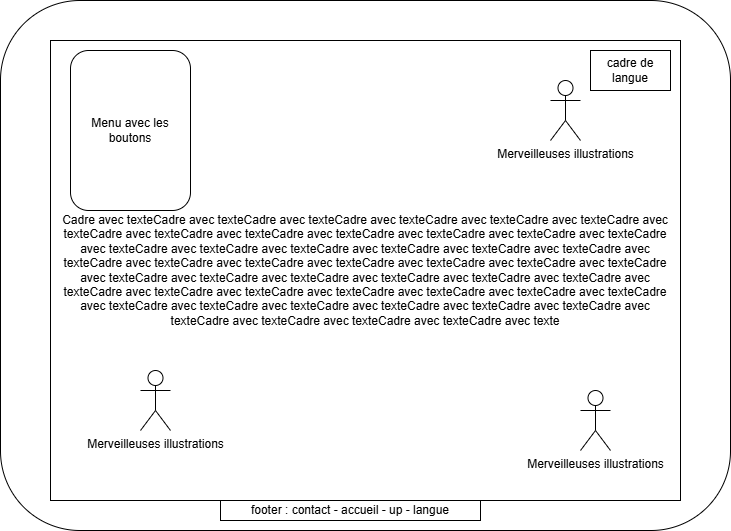
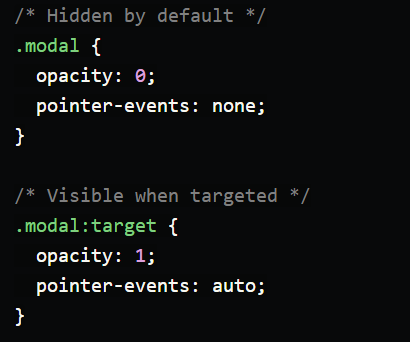
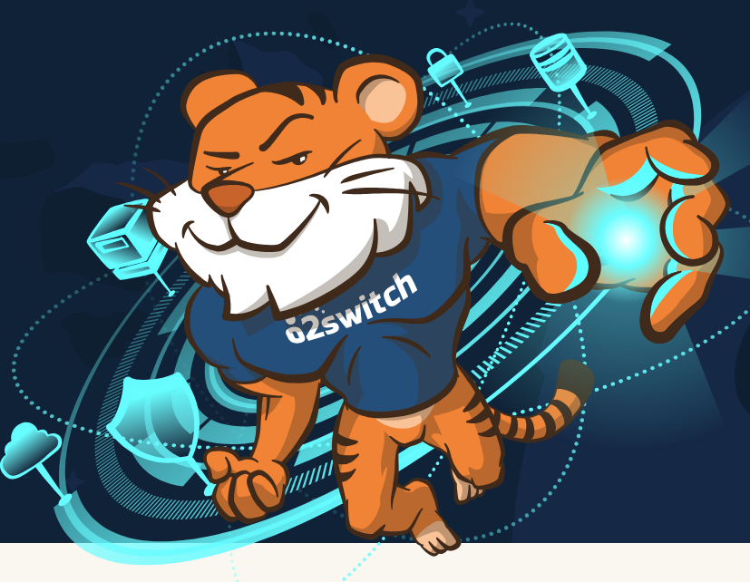
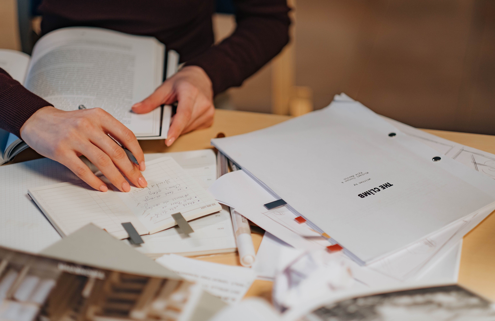
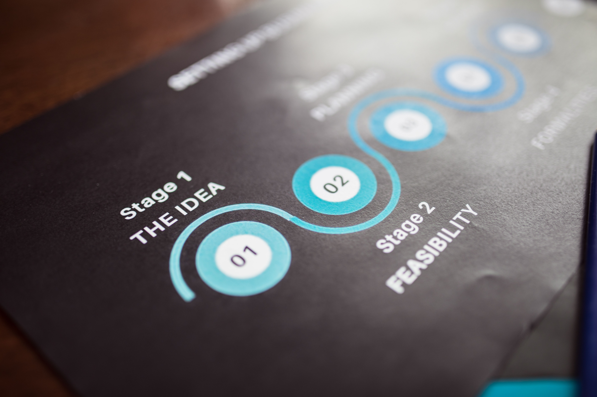

Démarche
Cette page présente les principaux choix effectués pendant la création du site. Elle permet d’expliquer la logique générale du projet : le thème choisi, les inspirations visuelles, l’organisation de l’interface, les choix techniques et les pistes d’évolution envisagées.
Objectif du site

Le site a été conçu comme une vitrine professionnelle personnelle. L’objectif est de présenter un profil, des compétences et des projets informatiques dans une interface claire, cohérente et facile à parcourir.
Le projet répond aussi à une contrainte pédagogique : réaliser un site uniquement en HTML et CSS, sans JavaScript ni framework. La démarche consiste donc à utiliser les notions vues en cours tout en les organisant dans un projet personnel.
Inspiration visuelle

La palette graphique du site s’inspire des couleurs associées au Sénégal dans le football : vert, jaune et rouge. Cette référence vient notamment de l’univers des maillots, qui utilisent ces couleurs de manière forte et immédiatement reconnaissable.
Pour le site, ces couleurs ont été volontairement adoucies. Le but n’était pas de reproduire directement un maillot, mais de transformer une référence sportive personnelle en une charte graphique plus sobre, adaptée à une vitrine professionnelle.
Le vert sert de couleur principale, le jaune est utilisé comme accent visuel, et le rouge apparaît seulement par touches. Ce choix permet de garder une identité personnelle sans rendre l’interface trop vive.
Démarche minimaliste
La mise en page suit une logique minimaliste : limiter les éléments inutiles, réduire le bruit visuel et mettre en avant les informations importantes.
Le site utilise donc un nombre limité de couleurs, une typographie simple, des espacements réguliers et une navigation constante. Les pages ne cherchent pas à multiplier les effets visuels, mais à rendre le contenu lisible et structuré.
Cette approche rejoint l’idée d’un design esthétique et minimaliste : l’interface doit soutenir le contenu, pas le concurrencer.
Référence vidéo
Cette vidéo sert de référence complémentaire pour l’idée de minimalisme : réduire les éléments inutiles, clarifier la composition et mieux guider le regard. "Communicate, don't decorate."
Organisation de l’interface

La structure principale repose sur deux colonnes : un menu latéral à gauche et une zone de contenu à droite. Ce choix permet de séparer clairement la navigation du contenu principal.
Le menu utilise position: sticky, ce qui lui permet de rester visible
pendant le défilement. Cette solution rend la navigation plus confortable sur les pages
longues, comme les pages de projets ou de démarche.
La zone de contenu est adaptée selon les pages. L’accueil présente le profil de manière plus visuelle, tandis que les pages intérieures utilisent davantage des sections, des grilles, des tableaux ou des cartes.
Choix techniques

Le site repose sur une feuille de style commune afin de conserver une identité visuelle cohérente entre les pages. Les principaux choix techniques sont l’utilisation de balises sémantiques, de CSS Grid, de Flexbox, de tableaux, de formulaires et d’un affichage responsive.
La page des projets utilise aussi une modale d’image sans JavaScript. Le principe repose
sur des liens internes pointant vers un identifiant HTML et sur la pseudo-classe
:target. Lorsqu’une image est ciblée par l’URL, la fenêtre d’agrandissement
devient visible.
- CSS Grid pour la structure générale et les grilles de cartes.
- Flexbox pour aligner les icônes, les langues et certaines listes.
:targetpour l’agrandissement des images sans JavaScript.:hoveret:focuspour améliorer les interactions.
Hébergement envisagé

À plus long terme, ce site pourrait être hébergé en ligne avec d’autres projets personnels. L’objectif serait de choisir une solution compatible avec PHP, afin de pouvoir héberger des projets statiques, mais aussi des projets dynamiques.
Deux pistes sont envisagées : o2switch, déjà utilisé auparavant, et Hostinger, dont les offres peuvent être intéressantes selon le prix annuel et la durée d’engagement. Le choix final dépendrait du rapport entre le prix, les possibilités techniques, la gestion PHP, le nom de domaine, le support et le nombre de projets hébergeables.
Sources et inspirations

Certaines parties du projet reposent sur des sources externes clairement identifiées. Ces sources ne remplacent pas le travail de conception, mais elles permettent de justifier certaines inspirations graphiques ou techniques.
Les sources techniques concernent surtout deux éléments : le menu collant avec
position: sticky et la modale d’image sans JavaScript avec
:target. Les autres éléments relèvent principalement des notions vues en cours :
structure HTML, listes, images, tableaux, formulaires, Flexbox, Grid, pseudo-classes
et responsive design.
Évolution du projet

Le site a été construit progressivement. La première étape a consisté à définir une structure générale et une direction visuelle. Ensuite, les pages ont été ajoutées une par une : accueil, profil, compétences, projets, démarche, contact et sources.
La page d’accueil sert de porte d’entrée. Les pages intérieures développent les informations de manière plus précise. La page projets met en avant des images et des cartes, tandis que la page compétences utilise une grille et un tableau.
Cette progression permet de garder une cohérence globale tout en donnant un rôle clair à chaque page.